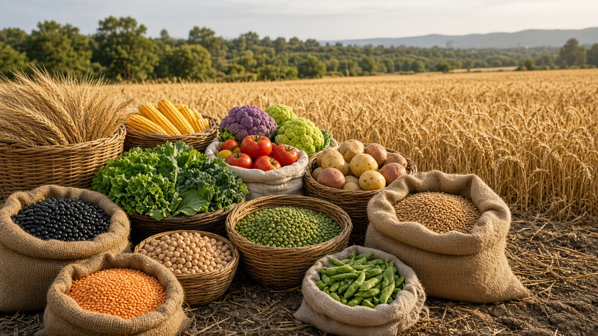
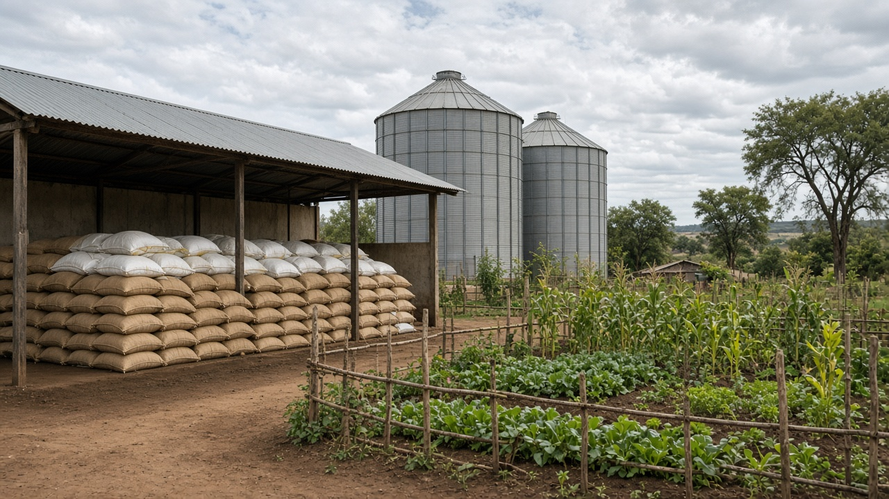
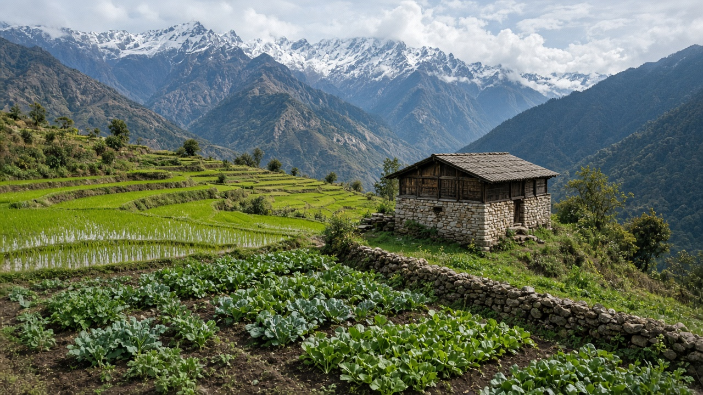

Food Security and Global Hunger
Published on August 20, 2026

Food security exists when all people, at all times, have physical, social, and economic access to sufficient, safe, and nutritious food that meets their dietary needs and preferences for an active and healthy life. Despite decades of agricultural progress, more than seven hundred million people face chronic hunger, while billions cannot afford healthy diets. Poverty, conflict, climate shocks, and inequality disrupt production and distribution. The Food and Agriculture Organization tracks four dimensions of food security: availability, access, utilization, and stability. Achieving zero hunger requires coordinated action across farming, trade, social protection, and governance at every level of society.
Global hunger is not caused by a single shortage of calories but by uneven distribution, post-harvest losses, volatile prices, and weak safety nets. Smallholder farmers produce a significant share of the world's food yet often lack credit, irrigation, and market access. Women and children bear disproportionate impacts when household income falls or staple prices spike. School feeding programs, cash transfers, and strategic grain reserves help communities weather droughts and economic downturns. Sustainable intensification on existing farmland, agroecological practices, and diversified diets reduce pressure on ecosystems while improving nutritional outcomes for vulnerable populations worldwide.
International frameworks such as Sustainable Development Goal 2 call for ending hunger, achieving food security, improving nutrition, and promoting sustainable agriculture by 2030. National food security strategies must integrate climate adaptation, land tenure reform, and investment in rural infrastructure. Reducing food waste, strengthening local food systems, and ensuring fair trade terms support both producers and consumers. Citizens can contribute by supporting ethical food brands, reducing waste at home, and advocating for policies that protect the right to food. Building resilient food systems is essential for human dignity, peace, and planetary health in the decades ahead.

खाद्य सुरक्षा तब हुन्छ जब सबै मानिसहरूले सधैं शारीरिक, सामाजिक र आर्थिक रूपमा पर्याप्त, सुरक्षित र पोषक तत्वयुक्त खानामा पहुँच पाउँछन् जुन उनीहरूको आहार आवश्यकता र स्वस्थ जीवनका लागि उपयुक्त हुन्छ। कृषि प्रगतिका बावजुद, सात करोडभन्दा बढी मानिसहरू दीर्घकालीन भोकमरीमा छन्, र अर्बौंले स्वस्थ आहार किन्न सक्दैनन्। गरिबी, द्वन्द्व, जलवायु आघात र असमानताले उत्पादन र वितरण बाधित पार्छ। खाद्य तथा कृषि संगठनले खाद्य सुरक्षाका चार आयाम—उपलब्धता, पहुँच, उपयोग र स्थिरता— ट्र्याक गर्छ। शून्य भोकमरी हासिल गर्न कृषि, व्यापार, सामाजिक सुरक्षा र शासनमा समन्वित कार्य आवश्यक छ।
विश्वव्यापी भोकमरी क्यालोरी अभाव मात्र होइन, असमान वितरण, कटनी-पछि नोक्सान, अस्थिर मूल्य र कमजोर सुरक्षा जालले उत्पन्न हुन्छ। साना किसानहरू विश्वको ठूलो हिस्सा खाना उत्पादन गर्छन् तर अक्सर ऋण, सिँचाइ र बजार पहुँचबाट वञ्चित छन्। घरायसी आम्दानी घट्दा वा मुख्य खाद्यान्नको मूल्य बढ्दा महिला र बालबालिकाले बढी प्रभाव झेल्छन्। विद्यालय भोज, नगद हस्तान्तरण र रणनीतिक अनाज भण्डारले समुदायलाई खडेरी र आर्थिक मन्दीमा सहारा दिन्छ। विद्यमान खेतमा दिगो उत्पादन वृद्धि, कृषि पारिस्थितिक अभ्यास र विविध आहारले पारिस्थितिकी तन्त्रमा दबाब घटाउँछ र कमजोर जनसंख्याको पोषण सुधार गर्छ।
दिगो विकास लक्ष्य २ ले २०३० सम्म भोकमरी अन्त्य, खाद्य सुरक्षा, पोषण सुधार र दिगो कृषि प्रवर्द्धन गर्न आह्वान गर्छ। राष्ट्रिय खाद्य सुरक्षा रणनीतिमा जलवायु अनुकूलन, जमिन स्वामित्व सुधार र ग्रामीण पूर्वाधारमा लगानी समावेश हुनुपर्छ। खाद्य फोहोर घटाउने, स्थानीय खाद्य प्रणाली बलियो बनाउने र निष्पक्ष व्यापार सर्तले उत्पादक र उपभोक्ता दुवैलाई समर्थन गर्छ। नागरिकले नैतिक खाद्य ब्राण्ड समर्थन, घरमा फोहोर घटाउने र खानाको अधिकार संरक्षण नीतिका लागि वकालत गर्न सक्छन्। लचिलो खाद्य प्रणाली निर्माण मानवीय गरिमा, शान्ति र पृथ्वीको स्वास्थ्यका लागि अत्यावश्यक छ।

खाद्य सुरक्षा तब मौजूद होती है जब सभी लोग हर समय शारीरिक, सामाजिक और आर्थिक रूप से पर्याप्त, सुरक्षित और पोषक तत्वों से भरपूर भोजन तक पहुँच पाते हैं जो उनकी आहार आवश्यकताओं और स्वस्थ जीवन के लिए उपयुक्त हो। कृषि प्रगति के बावजूद, सात करोड़ से अधिक लोग पुरानी भुखमरी का सामना करते हैं, और अरबों स्वस्थ आहार क़ीमत पर नहीं खरीद सकते। गरीबी, संघर्ष, जलवायु झटके और असमानता उत्पादन और वितरण बाधित करते हैं। खाद्य और कृषि संगठन खाद्य सुरक्षा के चार आयाम—उपलब्धता, पहुँच, उपयोग और स्थिरता— ट्रैक करता है। शून्य भुखमरी हासिल करने के लिए कृषि, व्यापार, सामाजिक सुरक्षा और शासन में समन्वित कार्रवाई आवश्यक है।
वैश्विक भुखमरी केवल कैलोरी की कमी नहीं, बल्कि असमान वितरण, कटाई-पश्चात हानि, अस्थिर कीमतें और कमजोर सुरक्षा जाल से उत्पन्न होती है। छोटे किसान विश्व के बड़े हिस्से का भोजन उत्पादन करते हैं पर अक्सर ऋण, सिंचाई और बाज़ार पहुँच से वंचित रहते हैं। घरेलू आय घटने या मुख्य अनाज की कीमत बढ़ने पर महिलाएँ और बच्चे अधिक प्रभावित होते हैं। विद्यालय भोज, नकद हस्तांतरण और रणनीतिक अनाज भंडार समुदायों को सूखे और आर्थिक मंदी में सहारा देते हैं। मौजूदा खेतों पर दिगो उत्पादन वृद्धि, कृषि पारिस्थितिक अभ्यास और विविध आहार पारिस्थितिक तंत्र पर दबाव घटाते और कमजोर आबादी का पोषण सुधारते हैं।
दिगो विकास लक्ष्य २ २०३० तक भुखमरी समाप्त, खाद्य सुरक्षा, पोषण सुधार और दिगो कृषि को बढ़ावा देने का आह्वान करता है। राष्ट्रीय खाद्य सुरक्षा रणनीतियों में जलवायु अनुकूलन, भूमि स्वामित्व सुधार और ग्रामीण बुनियादी ढाँचे में निवेश शामिल होना चाहिए। खाद्य अपशिष्ट कम करना, स्थानीय खाद्य प्रणालियों को मजबूत करना और निष्पक्ष व्यापार शर्तें उत्पादकों और उपभोक्ताओं दोनों का समर्थन करती हैं। नागरिक नैतिक खाद्य ब्रांड का समर्थन, घर पर अपशिष्ट कम करना और भोजन के अधिकार की रक्षा वाली नीतियों की वकालत कर सकते हैं। लचीली खाद्य प्रणालियाँ बनाना मानव गरिमा, शांति और पृथ्वी के स्वास्थ्य के लिए आवश्यक है।